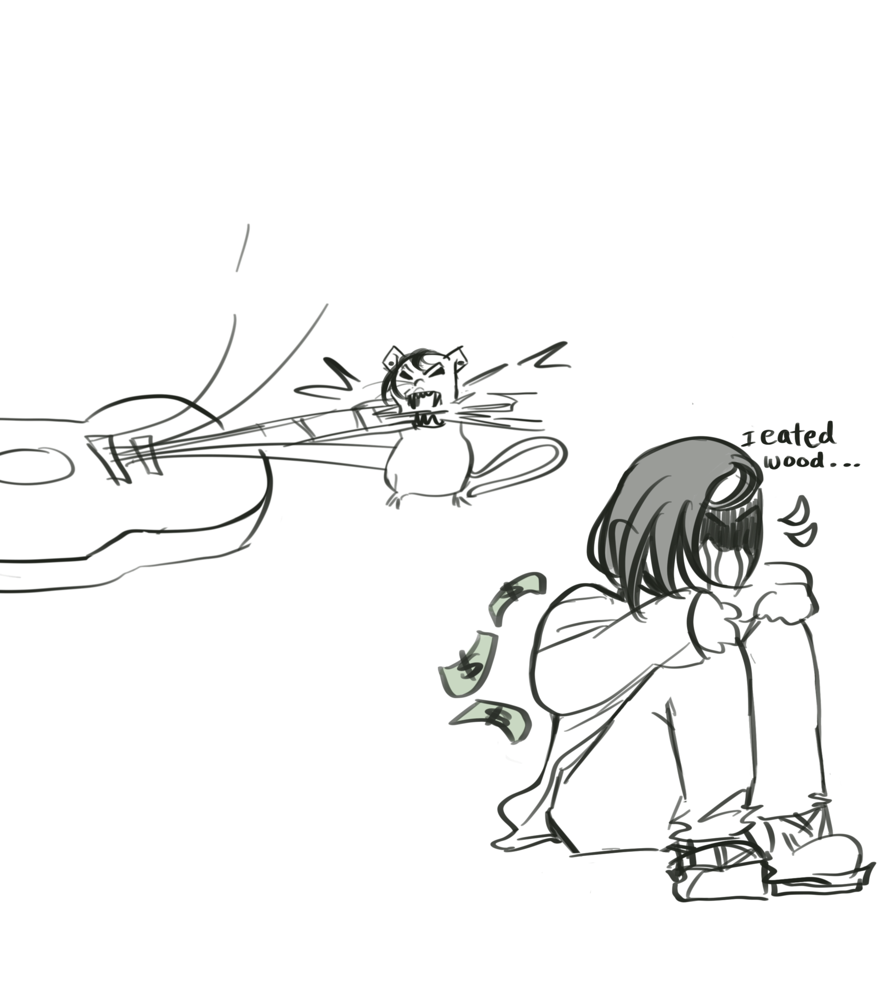
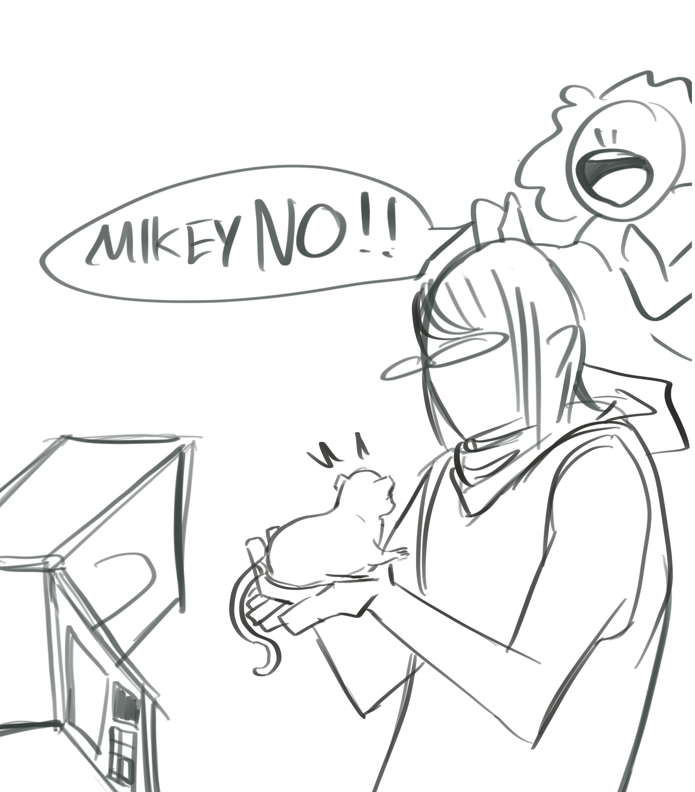
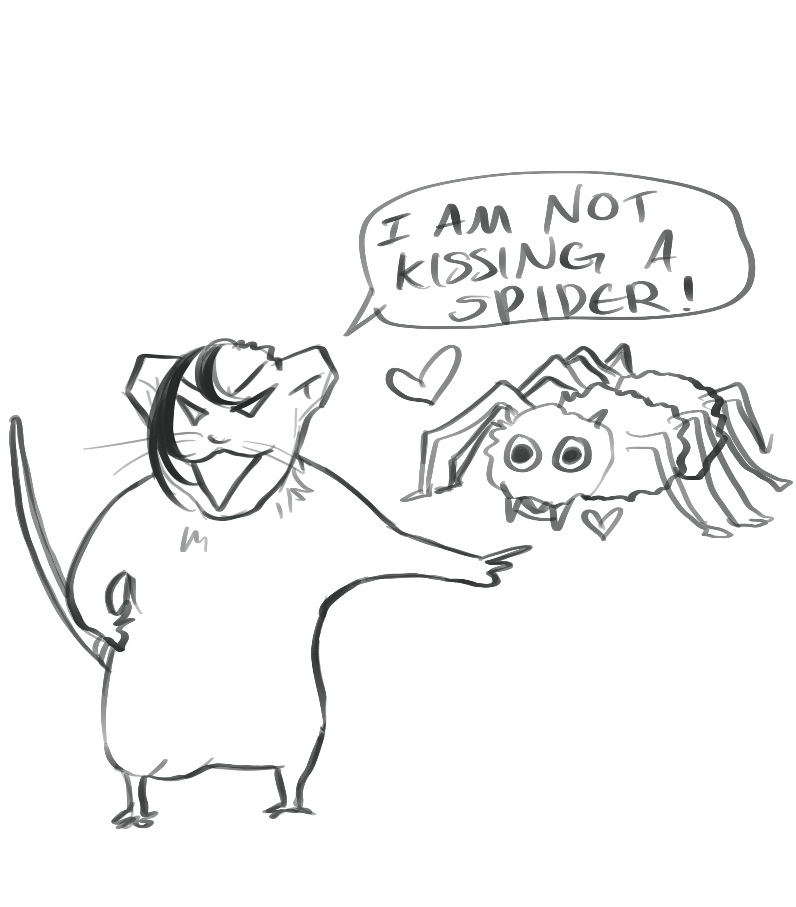

How to unRat your bandmate
Kinda hard to beat the furry allegations with this one but basically its a continuation of the Christmas chapter. I really wanted to draw Frank Iero as a rat because I thought he looked slightly rat-like. DO you know WhAT i mean (probably not). Anyway, these prompts were generated by my lovely instagram followers of primarily 13 year olds and I still think they're great.

"perform some sort of satanic ritual but with cheese"
"frank has to eat as a mouse a whole wooden expensive guitar"
"qnd then he turns into a person and cries becauss money not cus he ate wood"
"He has to eat ratatouille"

"Microwave him"
"A true hatred or indifferent kiss"
"(instead of a true love's kiss like in princess and frog)"
"Mikeyway turned him into a rat for being annoying"
so true. i love when my friends turn me into a rat for being annoying
"taking him to new jersey"

"one of them is secretly a witch"
"fighting against evil santa and they manage to turn frnk into a human!"

"plays guitar as a rat"
"and poof"

"he needs to eat 1000 pieces of cheese"
"in one day"
"he gets a tattoo"
"and baM human"
"dog"
idk, they literaly just commented "dog" so i drew dog
"remove da lip ring"
"its why he never puts it in anymore" same

Lore:
Damn I never realised how long this series was. I think there were a total of like 16 responses and being a chronic people pleaser I drew all of them. Took quite a bit of time.